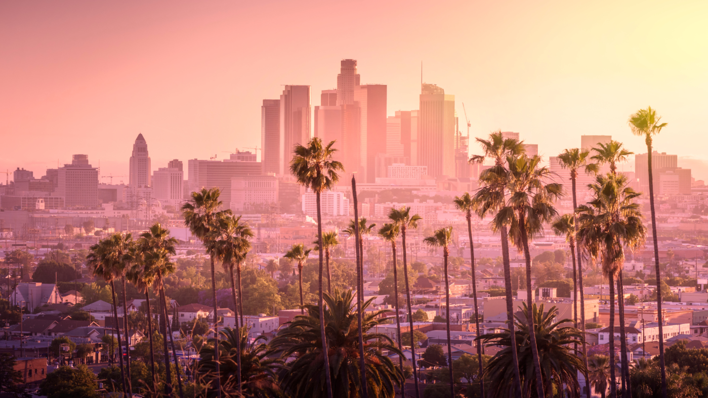
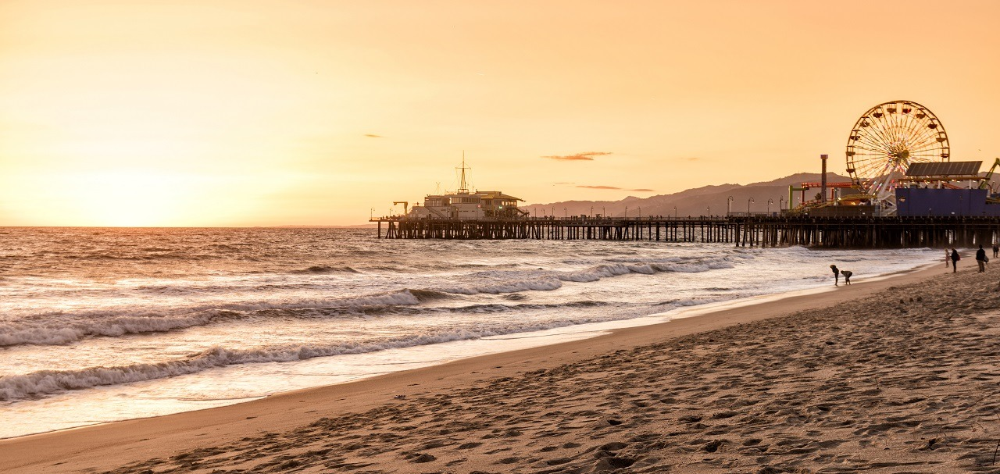
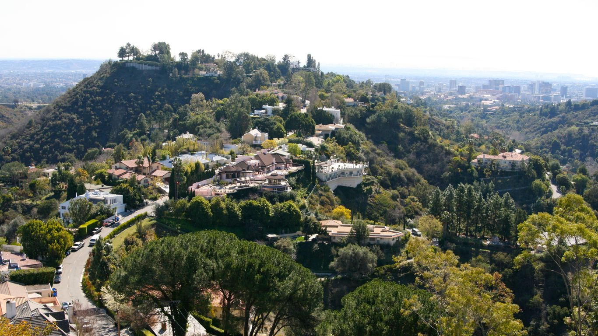
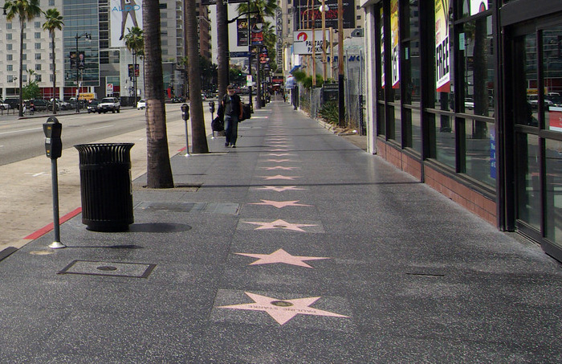

Los Angeles to słoneczna metropolia, do której ciągną turyści z całego świata. Sławę przyniosły jej hollywoodzka fabryka snów, mieszkający tu celebryci i piaszczyste plaże. Poznaj miejsca znajdujące się w pobliżu tego miasta – każde z nich ma do zaoferowania zupełnie inne atrakcje. Los Angeles, założone w 1781 roku przez Hiszpanów jako El Pueblo de Nuestra Senora la Reina de Los Angeles (Miasto Matki Boskiej Królowej Aniołów), to światowe centrum rozrywki, mody i technologii. Słynie z Hollywood, palm (wprowadzonych na igrzyska w 1932 r.) oraz najkrótszej kolejki linowej świata, Angels Flight.

Plaża zlokalizowana jest wzdłuż Pacific Coast Highway w Santa Monica. Ma 5,6 km długości. Na plaży i obok niej znajdują się parki, tereny piknikowe, place zabaw, toalety, stanowiska ratowników, Muscle Beach, wypożyczalnie rowerów, kilka hoteli, ścieżki rowerowe i drewniane ścieżki. Na plaży odwiedzający mogą uprawiać sporty jak: siatkówka, surfing, paddleboarding i pływanie.Santa Monica słynie z przepięknej plaży, kilometrów białego piasku i lśniącej wody. To kultowe miejsce dla mieszkańców i turystów, którzy mogą tu odpocząć, popływać i odpocząć. Mniej znana jest kluczowa rola, jaką Santa Monica State Beach odgrywa w odporności miasta na zmiany klimatu.

Beverly Hills, słynna dzielnica Los Angeles, to dawna plantacja fasoli, która przekształciła się w stolicę luksusu. Słynie z alei Rodeo Drive, licznych willi gwiazd oraz braku szpitali, cmentarzy i billboardów. Miasto to ikona popkultury, będąca najbardziej filmowaną lokalizacją na świecie, często kojarzona z serialem „Beverly Hills, 90210”. To miejsce symbolizujące bogactwo i status społeczny. Beverly Hills przyciąga celebrytów wyjątkowym połączeniem luksusowych rezydencji, malowniczych ulic z charakterystycznymi wysokimi palmami oraz łatwym dostępem do znanych butików i restauracji (takich jak Rodeo Drive).

Słynna na całym świecie Aleja Gwiazd w Hollywood składa się z ponad 2700 gwiazd z lastryko i mosiądzu, umieszczonych w chodniku wzdłuż 15 przecznic Hollywood Boulevard i trzech przecznic Vine Street . Pięcioramienne gwiazdy upamiętniają osiągnięcia aktorów, muzyków, reżyserów, producentów i innych osób z branży rozrywkowej.Pomysł powstał na początku lat 50. XX wieku z inicjatywy Hollywood Chamber of Commerce jako sposób na ożywienie dzielnicy Hollywood i uhonorowanie jej twórczego dziedzictwa. Pierwszą stałą gwiazdę odsłonięto w 1960 roku, a Aleja od tego czasu systematycznie się rozrasta, dodając średnio około trzydziestu nowych gwiazd w ciągu roku.